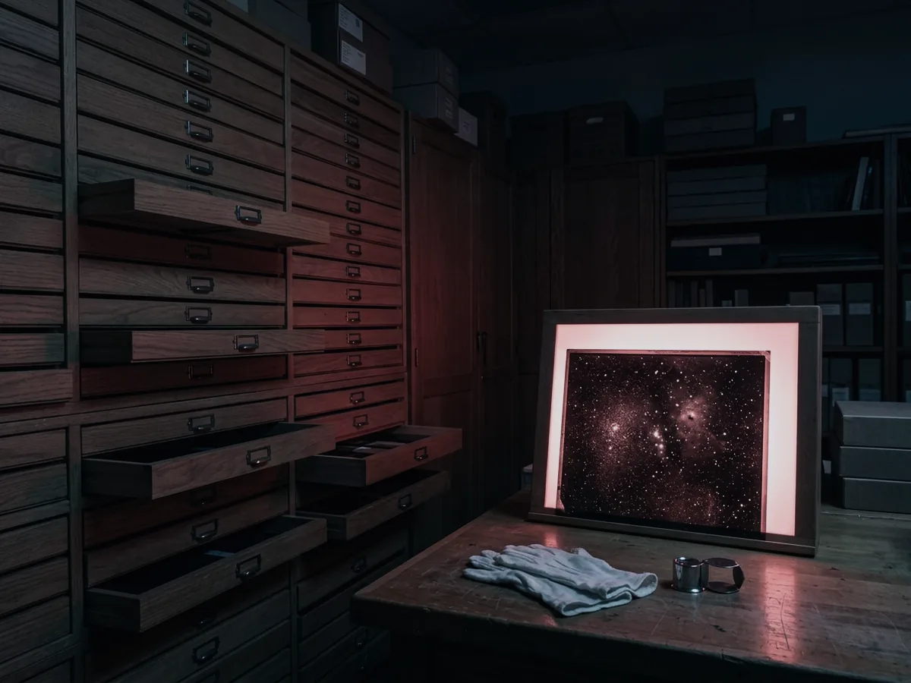
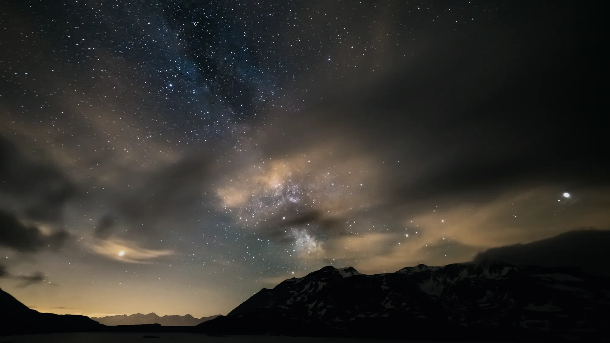
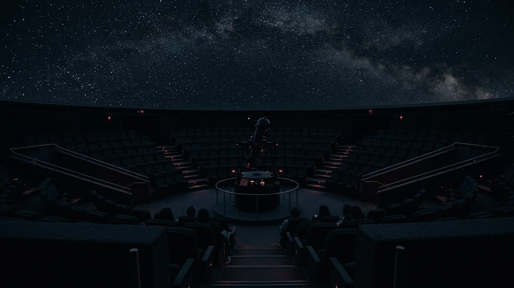

Permanent galleries
Exhibitions
Four rooms, none of them large. We would rather you looked properly at thirty objects than walked past three hundred.

The Measuring Room
Astronomy is the oldest quantitative science because the sky is the only laboratory that was always open. This room is about the instruments people built to get numbers out of it — quadrants, sextants, a transit clock that kept the observatory’s time to a tenth of a second a day, and a geared orrery that is wrong in interesting ways.
The centrepiece is the observatory’s original transit instrument, used from 1963 to 1979 to fix the time signal for the whole of west Cumbria.
The Plate Room
Before digital sensors, the sky was recorded on glass. VELA holds 11,400 photographic plates exposed between 1912 and 1987, and the room they live in is open — you can watch the digitisation happening on the bench.
Plates are not just history. A century of images is a century of measurements, and several of the variable stars on our current programme were first noticed by someone comparing two pieces of glass by eye.


The 1908 Refractor
A 457 mm refractor built by Cooke of York, moved here from a private observatory in Kendal in 1971 and restored in 2019. It is not a museum piece behind a rope. It works, it is used, and on Sunday afternoons members can book half an hour on it.
For the Moon and for double stars it still outperforms the 1.2 metre, because a long refractor gives a steadier, higher-contrast image than a fast reflector ever will. The big telescope is for faint things. This one is for sharp things.
Dark
The last room is not about telescopes. It is about the fact that most people alive today have never seen the Milky Way, and that this happened within one lifetime.
There is a wall of our own sky-brightness measurements going back to 1998, a working comparison of shielded and unshielded street lighting you can switch yourself, and a single unlit alcove that takes about eight minutes to do anything for you — which is the point. Dark adaptation is slow, and any white light resets it.
That is also why this website has a red-light mode, and why we will ask you to put your phone away on the terrace.

And the planetarium
Ninety-six reclining seats under a fourteen-metre dome, running five shows on rotation. It is indoors, it is warm, and it runs whatever the weather is doing — which in this county is the argument for booking one.
